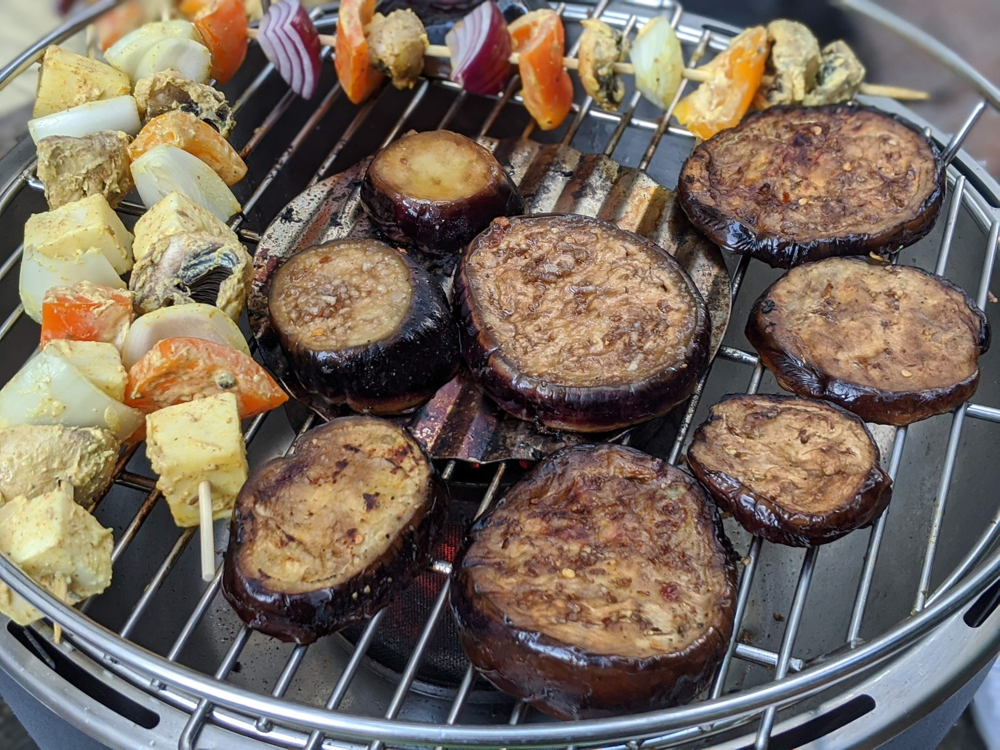

Aubergines marinées

Pour 6 personnes :
- Un peu de sel et de poivre
- Deux aubergines pas trop grosses
- Trois petits piments séchés
- Quatre gousses d'ail
- (Facultatif) Deux cuillères à soupe de sauce soja
- Cinq cuillères à soupe de vinaigre balsamique
- Huit cuillères à soupe d'huile d'olive
- Laver les aubergines et les couper en tranches. Les saler plutôt généreusement, et les mettre dans une passoire une bonne demi-heure pour qu'elles dégorgent.
- Pendant ce temps, éplucher et écraser l'ail, et couper les petits piments séchés en petits morceaux.
- Essuyer chaque tranche d'aubergine avec du papier absorbant. Les mettre dans une boîte, ajouter la sauce soja, l'huile d'olive, le vinaigre, le piment, l'ail écrasé, et du poivre. Fermer la boîte, bien secouer pour mélanger, laisser mariner au moins 15-30 minutes (mais on peut aussi faire ça la veille).
- Faire griller au barbecue.
Retour à la liste des recettes